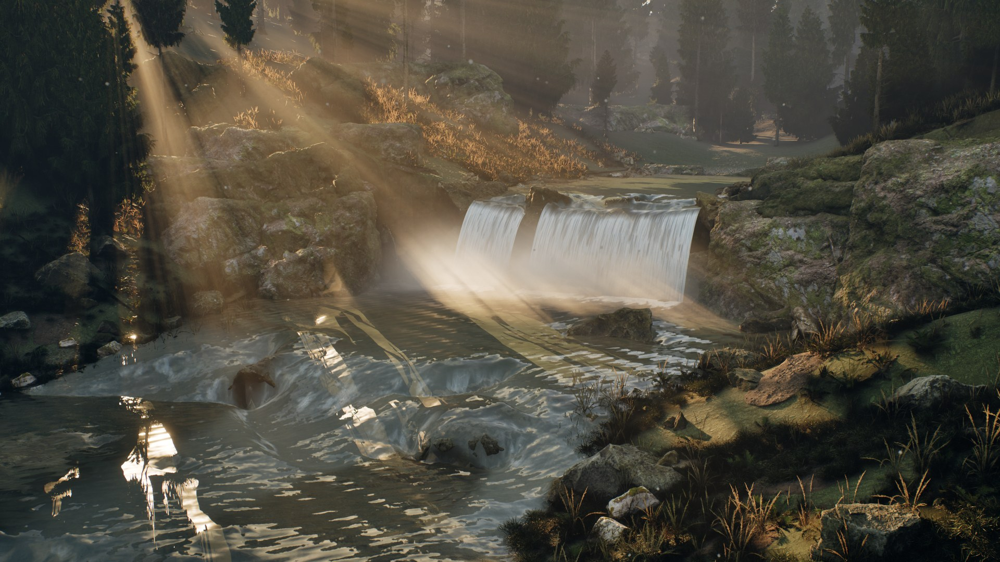

Unreal Engine 5.8 plugin · Documentation
Water Dynamics
Spline rivers, waterfalls and lakes that react to what is in them. A shallow-water solver moves the water around rocks and over the bed, and the same flow drives the surface detail, transported foam, impact waves, splashes and buoyancy. Realistic and stylized looks share one simulation. C++ source is included.
- UE 5.8 · Win64
- C++ source
- 5 water presets
- 4 look presets
- 12 example maps

Overview
The main actor is AWDWaterBody. For a river it simulates depth and velocity along a spline channel with a depth-averaged finite-volume solver. Static collision is read into the bed automatically: rocks above the surface split the current, submerged rocks make it shallower. AWDWaterfall connects an upper river to a receiving pool. Lakes and finite oceans use ripples and Gerstner waves.
Where it fits
- Rivers that change during play: a boulder falls in, a dam opens, a bridge collapses. The current re-routes without repainting a flow map.
- Gameplay on the water: query height, velocity and depth anywhere for boats, swimming AI, floating loot or currents that push the player.
- Objects hitting water: stones, bodies and debris make wave packets, splash crowns, rebound jets, droplets and mist. Hook your own sound or Niagara to
OnWaterImpact. - Level art: rapids, pools and waterfalls with real units, a waterbed type and clarity, in a realistic or stylized look.
- Cinematics: deterministic results at a fixed time step for Sequencer and Movie Render Queue.
Install
- Install the plugin from Fab into the engine, or copy the
WaterDynamicsfolder toYourProject/Plugins/WaterDynamics. - Enable Water Dynamics in Edit → Plugins and restart the editor. Procedural Mesh Component is enabled automatically.
- In the Content Browser, turn on Settings → Show Plugin Content.
The plugin does not change your project's game mode or rendering settings, and writes no files during normal play. For the reference look, use Lumen and DX12 SM6.
Five-minute tour
- Open
/WaterDynamics/Maps/L_RapidsRealisticand press Play. A wide boulder river feeds two waterfalls. 3–7 switch cameras, Space drops a stone, K cycles the waterbed, ← → change inlet speed, ↑ ↓ turbidity, L / P the sun, C caustics, 2 the stylized map, H the HUD. - Open
L_RiverRealistic. B removes and reinserts the central rock: watch the flow, foam and surface re-route. F shows velocity arrows, V velocity colours, T switches the look. - Open
L_ImpactRealistic. Z / X / C pick a 9, 17 or 28 cm stone; click to drop it at the pointer. - Open a new level, choose Window → Water Dynamics and press Create River. Set width, depth and flow speed in the panel, move the spline points, and place a rock with collision in the channel.
The example maps use their own game mode through World Settings → GameMode Override.
Example maps
All maps are in /WaterDynamics/Maps. The rapids, river and impact examples come in matching realistic and stylized pairs that share the same simulation.
| Map | Shows |
|---|---|
| L_AuthoringOverview | Rivers, a lake and a waterfall made with the authoring panel |
| L_RapidsRealistic / Stylized | Wide boulder rapids, connected waterfalls, solar optics, waterbed presets |
| L_RiverRealistic / Stylized | Spline river with a removable obstacle and flow diagnostics |
| L_ImpactRealistic / Stylized | Stones of three sizes entering still water |
| L_MountainRiver | Narrow mountain river with CC0 scanned rocks and wet/dry banks |
| L_River | Basic spline river |
| L_Lake | Ripples and floating bodies |
| L_Coast | Directional swell and shoreline foam |
| L_Interaction | Kinematic interactors, impacts and spray |
Authoring panel
Window → Water Dynamics opens a panel that works on the current level.
- Create Water: river, lake or a complete waterfall setup (upper river, sheet and receiving pool), in the realistic or stylized look.
- Appearance: style, quality (Balanced, High, Cinematic) and waterbed (Rock, Sand, Silt, Organic).
- Shape and Flow: river width and depth in centimetres, flow speed in m/s, editor preview on or off.
- Color and Transparency, Look Presets: tune the water and save it as a reusable Data Asset.
- Rebuild and Obstacles, Diagnostics: refresh collision and copy a setup report.
Changing quality rebuilds the water and resets its local simulation. Appearance changes keep the simulation running.
Rivers and obstacles
- Place
BP_RiverRealisticorBP_RiverStylized, or use the panel. Keep the actor upright and at unit scale; translation and yaw are supported. - Edit the
RiverSplinepoints. Point Scale Y multiplies width, Scale Z depth, Scale X the inlet speed. The spline is the reference water surface: place it above the bed. - Put rocks with query collision (WorldStatic) in the channel. Above-water cells become walls, submerged cells raise the bed. Changes are picked up every Collision Refresh Interval (0.5 s) or at once with
RefreshRiverObstacles. - Tag bridges and other geometry that should not block water with
WD_IgnoreFlow. Use Obstacle Actors to add movable stones explicitly. - River Bank Extension widens the simulated strip so water can rise onto wet/dry banks.
Collision is captured as a height map from above. Overhangs, tunnels and bridges need WD_IgnoreFlow or proxies. Stones should span several grid cells; raise River Grid Resolution for small obstacles. The plugin does not carve a Landscape.
Waterfalls
Place WDWaterfall at the lip with local +X downstream. Set Width, Drop Height and Exit Speed, assign Source Water (the upper river) and Receiving Water (the pool), then Rebuild Waterfall. The panel's waterfall setup does this for you.
The sheet follows a gravity trajectory; the landing distance is Exit Speed × √(2 × Drop Height / 981). The landing adds foam, droplets, spray mist and bounded momentum into the pool through AddRiverJet, so the current below the fall responds. Aeration, Spray Count, Droplet Count, Froth Length and Impact Spray Scale control the look.
Sun and caustics
WDWaterLighting binds one Directional Light, the water actors and the caustic receivers. SetSunAngles moves the sun; Caustic Strength and Water IOR (1.333) drive the optics.
Look and waterbed
Waterbed Type → Apply Selected Waterbed Preset sets a starting point: RockyClear (8 m clarity), Sand (5 m), Silt (2 m, brown) and OrganicGreen (3 m, algae). The presets keep the style and the running simulation.
With Override Appearance you can tune Clarity Distance, Transmission Color, Turbidity, Sediment Color, Algae Amount, Surface Opacity and Roughness, then save the result as a look preset. Four presets are included: Clear River, Glacial Lake, Peat River and Stylized Lagoon.
Waterbed Receivers change their ground material only in the submerged region; your own ground materials need the WaterbedType and WaterbedTint parameters.
Gameplay recipes
| Goal | Blueprint |
|---|---|
| Floating crate or boat | Add WDBuoyancyComponent to a simulating root; set pontoons (cm), mass (kg) and density |
| Current pushes the player | SampleWater(Location) → apply Velocity as a force |
| Swimming check | SampleWater → Is Water and Depth |
| Stone thrown in | Automatic for physics bodies; or AddWaterImpact(Position, RelativeVelocity, Radius, MassKg) |
| Splash sound or Niagara | Bind to OnWaterImpact (position, velocity, radius, mass, energy) |
| Character wading | WDInteractorComponent on the character |
| River floods or calms | SetCurrentSpeedMetresPerSecond; the state is kept |
| Dam opens | Remove the blocking actor; the bed updates at the next collision refresh |
Blueprint API
| Function | What it does |
|---|---|
| Sample Water (World Position) | Is water, height, normal, velocity, depth (cm) and foam (0..1) |
| Add Water Impact (Position, Relative Velocity, Radius, Mass Kg) | Wave packet, splash crown, rebound jet, droplets and mist |
| Add Water Impulse (Position, Radius, Strength, Spawn Splash) | Local disturbance with optional droplets |
| Add Water Wake | Continuous wake from a moving object |
| Set / Get Current Speed Metres Per Second | Inlet speed without resetting the flow (0–15 m/s) |
| Set River Point Settings (Index, Width, Depth, Speed Multiplier) | Edits one spline point |
| Refresh River Obstacles | Re-reads collision into the bed now |
| Warmup River (Seconds) | Advances up to 8 s of flow when a level starts |
| Set Water Style | Realistic or Stylized; the simulation keeps running |
| Apply Waterbed Preset / Apply Look Preset / Apply Appearance | Changes the optics and the bed |
| Apply Visual Quality | Balanced, High or Cinematic; rebuilds the water |
| Rebuild Water / Reset Simulation | Applies topology changes / clears the state |
| On Water Impact (event) | Fires on every detected entry |
Editor scripting: WDWaterAuthoringLibrary exposes Create Water, Create Waterfall Setup, Save Look and Inspect Water to Python and Editor Utility Blueprints.
Key parameters
- Flow: Flow Speed (cm/s), River Width, River Depth, Bed Roughness (Manning friction), River Grid Resolution, River Bank Extension, Collision Refresh Interval.
- Foam: Foam Amount, Foam Color, Foam Patch Size, Foam Sharpness, Flow Foam Gain and Lifetime; surface foam trails: density, lifetime, maximum count.
- Surface: Flow Detail Strength, Wave Amplitude, Stylized Deep and Shallow Color.
- Impacts: Impact Wave Strength, Lifetime and Damping, Splash Intensity, Max Droplets, Max Mist Particles.
- Waterfall: Width, Drop Height, Exit Speed, Aeration, Sheet Motion, Froth Length, Landing Submergence, Jet Strength, Spray / Droplet / Impact Foam counts.
- Diagnostics: Draw Flow Vectors, Show Flow Colors; statistics show cells, foam trails and CPU time.
Rendering notes
- Water uses the native Single Layer Water shading model: IOR and Fresnel, absorption and scattering along the view path, refraction with Pixel Normal Offset.
- The realistic and stylized materials read the same flow, depth and foam. Switching style does not reset the water.
- Caustics on the bed are an animated approximation driven by the sun direction; they do not trace light paths.
- Reflections come from your scene (Lumen, sky light). Refraction samples what is on screen.
- Spray and mist are lightweight billboards; no Niagara system is required.
Performance
- The solver runs on the CPU. Its cost grows with the grid: set River Grid Resolution to the smallest obstacle you need to resolve.
- Measured in the Gorge showcase (RTX 5070 Ti Laptop, Core Ultra 9 275HX, 1080p, Lumen): two rivers with 62,400 and 16,434 cells and three waterfalls took about 10–11 ms of CPU water time per frame at the median; the whole scene ran at about 42 fps.
- Plan for a few active rivers per level. Long rivers need coarser cells or several shorter bodies.
Limitations
- 2.5D surface flow inside a finite spline domain. No 3D FLIP or SPH volume, overturning waves or unbounded flooding.
- Waterfalls are gravity sheets driven by the river, not volumetric fluid. Upper and lower rivers are separate bodies, not a mass-conserving network; river junctions are not supported.
- No FFT or infinite ocean, no underwater rendering, no Landscape carving. The water state is not replicated over the network.
- Moving obstacles update the bed approximately; the water does not push solid objects back except through buoyancy.
- Tested on Unreal Engine 5.8.2, Windows (Win64), DX12 SM6.
Changelog
1.0.0
First Fab release. Authoring panel with river, lake and waterfall setup; waterbed presets with clarity, turbidity and algae; look presets; connected waterfalls with landing foam and momentum into the pool; solar optics and bed caustics; wet/dry bank extension; impacts with wave packets, crowns, jets, droplets and mist; transported foam; buoyancy and interactor components; 12 example maps; no files written during normal play.
Support
Questions, bug reports and feature requests are welcome: email timatisib@gmail.com or message me on LinkedIn.
For a bug report, include the engine version, the map or settings you used, the report from Diagnostics → Copy Report in the panel and, if possible, a short video or screenshot.